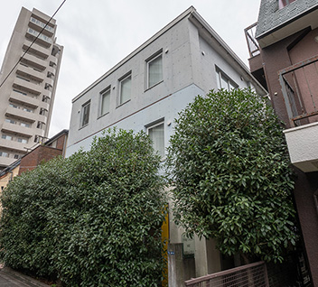

【個室レンタルオフィス】
オープンオフィス乃木坂/青山一丁目
青山一丁目に新築ビル全部をレンタルオフィスのためにデザインした、究極のオフィス
外装から内装までオープンオフィス仕様にカスタマイズされた新築の3階建てビルです。
レンタルオフィスとして最適化されたデザイン。部屋サイズのバリエーションも各種ご用意。
屋上も利用できる最新モデルのレンタルオフィスです。
乃木坂駅の真上にあたり、青山一丁目駅や六本木駅にもアクセスしやすい便利な最高の立地です。
オープンオフィス乃木坂/青山一丁目が提供するオフィスサービス
-
 高速インターネット＜光ファイバー＞
高速インターネット＜光ファイバー＞
- 100Mbpsの光ファイバーによるブロードバンド環境をご用意しました。各部屋に配線済みですので、パソコンに繋げばすぐLAN経由で高速インターネットを利用出来ます。
-
 ネットワーク・カラーレーザープリンタ+スキャナー
ネットワーク・カラーレーザープリンタ+スキャナー
- ネットワークを利用して、各お部屋のパソコンから印刷できます。プリンタをご用意いただく必要もございません。
スキャナー機能も搭載しております。
-
 カラーレーザーコピー
カラーレーザーコピー
- フロア内にご用意してあります。カード方式でコピーが出来ますので、小銭の準備が不要です。
-
 シュレッダー
シュレッダー
- 機密情報の破棄にご利用いただけます。
-
 ICカードキーによる入室管理
ICカードキーによる入室管理
- 専用ICカードを使ったホテル式のスマートシステムを用いて、セキュリティーを向上させています。
-
 宅配ロッカー
宅配ロッカー
- 24時間、荷物の受け取りが可能な宅配ロッカーを採用しています。
-
 ミーティングルーム（会議室）
ミーティングルーム（会議室）
- 商談・会議にご利用いただける共有スペースをご用意しています。インターネットで簡単に予約をしていただけます。
-
 自動販売機
自動販売機
- ちょっとした休憩や、お客様のおもてなしにもどうぞ。
-
 無線LAN（WiFi）
無線LAN（WiFi）
- 共有スペースとミーティングスペースにて、無線LAN(WiFi)サービスをご利用いただけます。
-
 快適フリースペース ※Luxury Lounge
快適フリースペース ※Luxury Lounge
- ショートミーティングをしたい時、ちょっと気分を変えて仕事したい時、「使える」快適なフリースペースです。

オープンオフィス乃木坂/青山一丁目の特徴

新築3階建てのビルを一棟丸ごとオープンオフィスにしました。
港区南青山１丁目。名刺に書かれたこの番地のインパクトは絶大です。
千代田線「乃木坂駅」4番出口からすぐ。大江戸線ほか「六本木駅」出口7番 から徒歩6分、乃木坂のおしゃれなレンタルオフィスです。
オフィス周辺のMap
オープンオフィス乃木坂/青山一丁目近隣のスポット
- ■企業
- 桂由美ブライダルハウス
- ■商業施設
- 東京ミッドタウン
ファミリーマート
オープンオフィス乃木坂/青山一丁目の住所・アクセス
- 東京都港区南青山1-20-2 乃木坂ビジネスコート 1F・2F・3F
- 地下鉄 千代田線「乃木坂駅」出口4番から 徒歩約1分
地下鉄 大江戸線ほか「六本木駅」出口7番 から徒歩6分
地下鉄 銀座線、半蔵門線「青山一丁目駅」出口4番から徒歩8分
オープンオフィス乃木坂/青山一丁目のフロアマップ

※フロア内は禁煙です。
※こちらはイメージ図となりますので、状況が異なる場合は現況を優先させていただきます。
- ◆初回納入金
- 利用料1ヶ月分の保証金
- ◆共益費
- 水道光熱費、ビル共益費、ゴミ出し、フロア・トイレの清掃、共有部分の消耗品代を含みます。